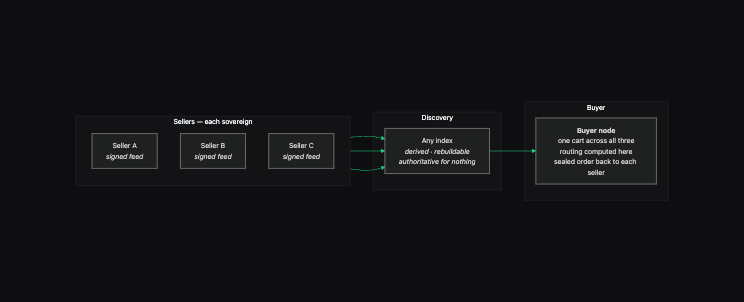
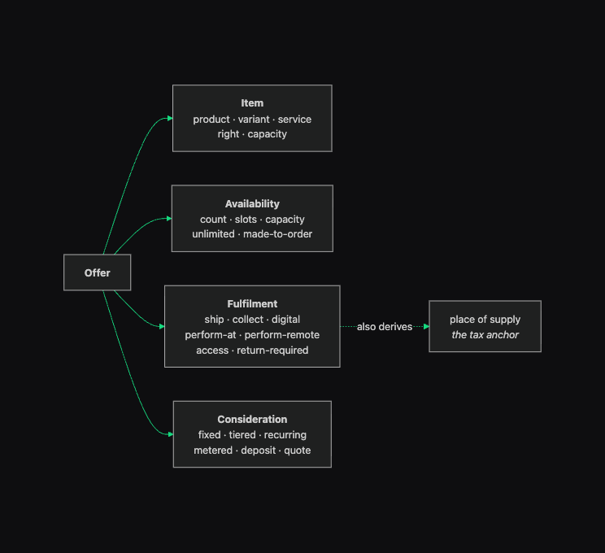
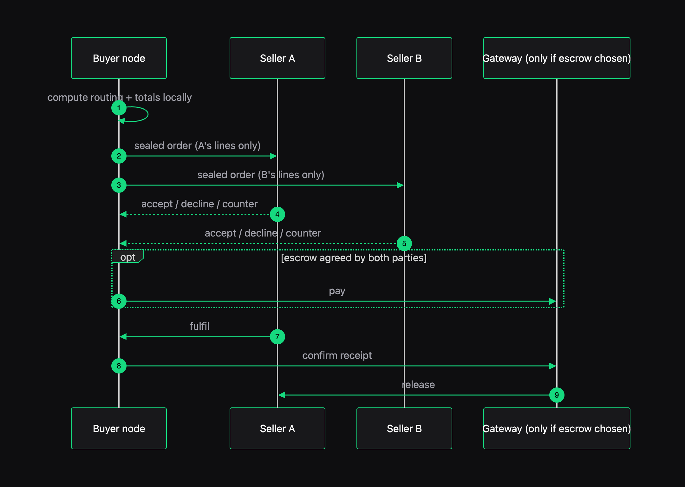

Commerce without a marketplace. A keypair is a store.
Soko is the reference implementation of TRACT — an open protocol for decentralized commerce covering goods, services, rentals and subscriptions between self-sovereign identities. Your catalogue is a signed feed you publish, not rows in someone's database. Your cart lives on your own devices. Delivery is computed locally from published rate cards rather than brokered by a platform. Nobody can delist you, and leaving costs a DNS change.

No party sees the whole cart. The index holds no authority — a disagreement between an index and a seller's feed always resolves in favour of the feed.
What changes when there is no operator
Every row below is something a platform currently owns on your behalf.
Your catalogue is yours
A store is a signed, append-only feed published from a keypair. There is no account to be suspended and no operator who can edit, reorder or remove your listings. Delisting is not a permission anyone holds.
One product, many sellers
A product record is content-addressed, so two sellers publishing the same record converge on the same address by construction — no GS1 fee, no ASIN, no registrar. Where this is still unproven →
Manufacturers sign their own facts
A brand can sign the canonical record for its own product, so a reseller adds an offer but cannot misdescribe the thing. On a centralized marketplace, the marketplace is authoritative about your product. Here you are.
The cart is the buyer’s
Cart, wishlist and purchase history are CRDT state on the buyer’s own devices, synced across them and surviving any store closing. A merchant never sees what else you are considering, because there is no shared session to see it in.
One cart, independent sellers
Assemble a cart spanning sellers who have never heard of each other and check out once — including bundles whose components come from different sellers. A platform structurally cannot do this; separate stores mean separate checkouts.
Delivery computed, not brokered
Carriers, distributors and peer couriers publish rate cards as signed public objects. Routing and consolidation are computed on the buyer’s node — no quote API, no rate limit, no middleman learning what you are shopping for.
One shape for every trade
Goods, services, rentals, bookings and subscriptions are the same object with four axes — not a plugin per category.
Item
product · variant-of-group · service · right or licence · capacity. Variants follow the schema.org ProductGroup / variesBy model, so existing feeds map in.
Availability
count · time slots · capacity per interval · unlimited · made-to-order. Slots profile VAVAILABILITY from RFC 5545 rather than inventing a calendar.
Fulfilment
ship · collect · digital grant · perform-at-place · perform-remote · access grant · return-required. This axis is also what determines place of supply for tax.
Consideration
fixed · tiered/volume · recurring · metered · deposit + balance · quote-required. B2B contract pricing and RFQ are first-class, not an enterprise add-on.
Four small closed sets, combined. That is enough to express a haircut booking, a scaffolding hire, a made-to-measure suit, a metered API, and a tin of beans — without a category-specific code path for any of them.
Soko implements TRACT; TRACT stands on DMTAP
Nothing here reinvents identity, feeds, sync, or reachability — those are the DMTAP substrate, adopted unchanged.
# the spec is the product; read it first git clone https://github.com/vul-os/tract cd tract && make lint # the implementation git clone https://github.com/vul-os/soko cd soko && cargo check --workspace # settlement names no provider — wire your own # cargo tree -p soko-seam -> one line, zero deps
- 1SubstrateIdentity, Feeds & Blobs, Sync, Infrastructure Roles and Wake come from DMTAP under its à-la-carte adoption rule — implement a capability's function, speak its spec.
- 2SpineTRACT adds only commerce: catalogue, offer, cart, order, delivery, settlement, trust. No new cryptography, no new hash construction, no new signature framing.
- 3SeamsWhere a real institution must be chosen — who settles money, who holds goods in dispute — TRACT specifies a seam and refuses to name a provider. Naming one exports its jurisdiction to every implementor.
How it fits together
No product screenshots yet — Soko is pre-alpha and there is no UI to photograph. These are the real architecture diagrams, regenerated from one source.

Every trade is one object with four axes. The dotted edge is the one that catches people out: fulfilment also derives place of supply, which is the tax anchor — an event held abroad is taxed at the venue no matter where either party lives.

The buyer’s node orchestrates; there is no central checkout. The gateway appears only if both parties chose escrow.
What Soko does not remove
A decentralized design that hides its operator classes is lying about them. TRACT has one, and says so on the first page. The closest thing to this that actually shipped — OpenBazaar — died in 2021 having moved about $86k in 14 months; the spec records why, in detail, rather than omitting it.
Somebody renders the store
A shopper with no keypair cannot verify a signature, so they trust a storefront gateway to have rendered honestly. Unlike DMTAP's mail gateway, this one never self-extinguishes — browsers are permanent. Any node can re-render the same store and be compared byte-for-byte; that bounds the trust, it does not remove it.
Somebody holds the money
Holding funds for strangers is a licensed activity nearly everywhere. Escrow is an operator class: permissionless to enter, competing, chosen per-order by both parties, scoped to the jurisdictions it is actually licensed for — and never in possession of anyone's identity keys. Its every ruling is a signed public object, so unfair operators accumulate a permanent record of it.
Nobody agrees on a star rating
Reviews are signed and proven against real purchases, which makes ballot-stuffing cost a real transaction. But ranking is derived data any node computes, so different indexes will rank differently. There is no canonical 4.7 stars, because computing one requires an authority — and that is the thing being removed.
Part of Vulos
Soko is one of a family of open, self-hostable products that stand alone but compose — Envoir for mail and identity, Ofisi for documents, SlipScan for books, OpenRate for exchange rates, Patala for payment rails. Same substrate, same posture: your data on your machine, no telemetry, and an honest statement of what each one cannot do.
Explore Vulos →